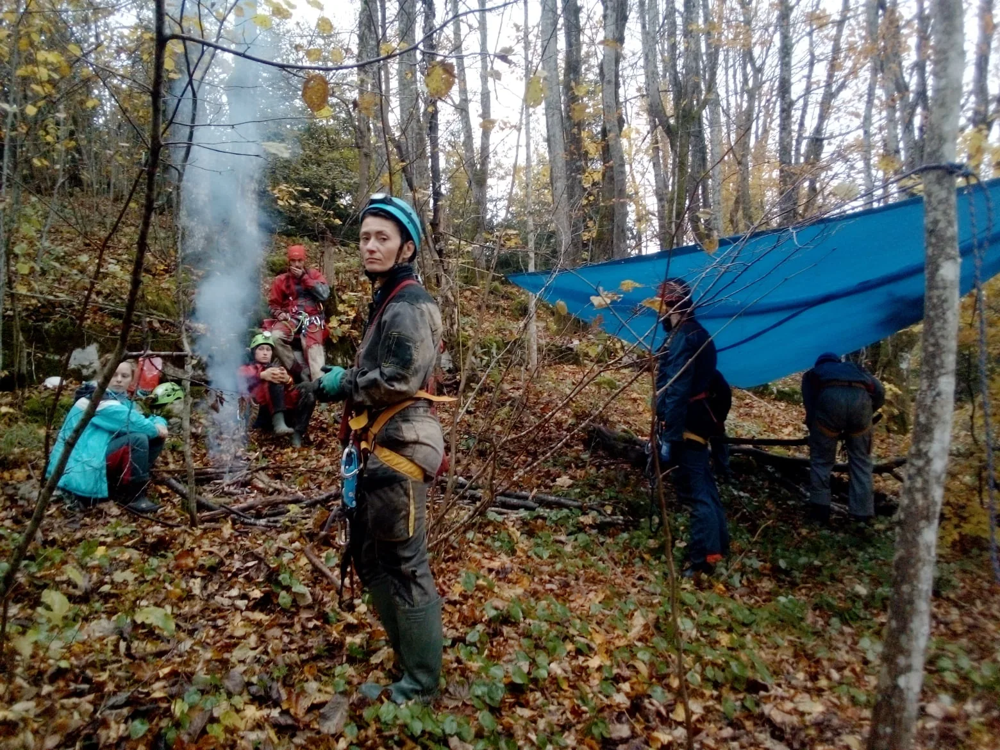

Speleoškolica kao san
Cijela školica mi se sad čini kao neki san, ali pogotovo taj vikend o kojem sad pišem. Jame Norvežanka i Dvaput je dvaput. Upečatile su mi se u pamćenje neke jako bajkovite situacije, sve ostalo je malo blurry, ilitiga…

Napisala: Karmen Jakovina
Fotografije: arhiva SOV
Kad je Sutla u nekom od mailova napomenuo pisanje osvrta na školicu za Velebiten, ignorirala sam to jer, sve mi se u glavi činilo ispremiješano. A kad me Fero zatim izravno pitao bih li napisala nešto o izletu Norvežanka/Dvaput je dvaput oblio me hladan znoj, nije mi odjednom bilo dobro jer sam se u tom trenu mogla sjetiti samo dvije situacije i to iz jame. Pa sramota, kako ću ja i o čemu uopće pisati, kad se ničeg ne sjećam? No kad sam krenula bilježiti misli o onome čega se sjećam, počelo je navirati sa svih strana. Znate ono kad sanjate, pa je sve nekako na preskokce i ispremiješano?
Cijela školica mi se sad čini kao neki san, ali pogotovo taj vikend o kojem sad pišem. Jame Norvežanka i Dvaput je dvaput. Upečatile su mi se u pamćenje neke jako bajkovite situacije, sve ostalo je malo blurry, ilitiga mutno. Je li se to sve uopće izdogađalo ili ne? Ili je samo previše vremena prošlo od zadnjeg izleta. (Izlete bez odlaska u jamu ne računam, jer sad sam stava, “kakav je to izlet, bez odlaska u jamu”).
Dok je trajala školica imala sam osjećaj da sam pobjegla iz ludog svijeta u normalni. Ne ono kako se kaže, bijeg iz stvarnosti, nego bijeg u stvarnost. U kojoj je zrak čist, corona ne postoji (čak ni kao božica piva), po noći slušaš puhove kak se svađaju (da su to puhovi mi je otkrio tata, koji je u tim šumama spavao za rata, a te beštijice su im krale hranu. Mi smo hranu jako dobro skrivali – u svojim trbušćićima). Vrlo brzo sam počela dobivati osjećaj koji te obavije kao topla dekica u hladnu večer, da si našao svoj tribe i da želiš s njima ovako provoditi svaki vikend, minimalno.
Bilo je baš hladno tog vikenda. Spavali smo na ispod 0, no kad si u bivku sa još 5 ostalih stisnut kao palačinka u protvi, ok možda ćeš kukati što su te ritali ili hrkali, ali ćeš biti jako sretan što ti nije bilo baš toliko hladno. Ali previše sam ubrzala. Nakon što smo stigli, posložili opremu i dobro se najeli, neki su se oblačili za odlazak u jamu, a neki ostajali učiti kako se postavlja i koristi Sv. Bernard (sustav koji se ne zove bezveze Sveti) i Škripac, bez kojega si u škripcu ako ga ne znaš zavezat, a trebaš napravit bivak. Potom smo išli u jamu.
Oblačili smo se po hladnoj, sitnoj kišici, što bi mi inače stvaralo paniku, jer ono, smočit ću se, bit ću mokra! Na toj zimi! Ali valja se koncentrirati na to kojim redom i kako se stavlja osobna oprema, jer ovo je već koji ono izlet, i da to još ne znam k'o vodu pit’ bilo bi zbilja žešći zbrukitis. Tako sam brzo zaboravila da kiši i nisam poslije primjetila da sam mokra.
Prvi dan sam išla u manju jamu, Dvaput je dvaput, sa instruktorom Dodom. Super mi je kad previše ne ispitujem unaprijed, tako da sam se baš lijepo iznenadila kad sam vidjela da ćemo izaći skroz drugim putem van. Krenuli smo se spuštati i tamo negdje nakon prvog sidrišta čula sam da Dodi govore instruktori da nešto na jednom sidrištu treba popraviti, da nije nešto dobro, da su se svi instruktori mučili to prijeći... A Dodo i ja smo se u čudu gledali, jer smo to prošli bez da smo primjetili neki takav problem. Ok nije bilo lako kao neka šetnja, ali što mi je drugo bilo lako? Tu mi je bio jedan od prvih bajkovitih trenutaka školice. Bila sam jako ponosna na sebe, a poslije sam razmišljala je li mi ovo bila opet neka potvrda da zakon privlačnosti funkcionira? Jer ako ne vidiš probleme nećeš ih ni doživjeti, iako možda postoje? Uglavnom ništa mi na ovoj školi nije bilo teško. Ok, osim onih nekih brojeva pri mjerenju i crtanju i malo ono nešto kamo se okrenut u kojem smjeru ići i sl. kad se treba orjentirati i pronaći jamu koju ideš istraživati i tako neke sitnice.
I mama se čudila. Jako. “Ti se doma žališ da budemo tiho jer ti hoćeš spat, a sad tam s čoporom ljudi spavaš i niš ti ne smeta, ni pjevanje do 1 ujutro? U blatu si cijeli dan i na hladnom?” Niti ne zna da smo jeli iz istih posuda i pili iz istih boca, što mi je isto bilo malo (dosta) teško, jer sam malo gadljiva po tom pitanju, al gle čuda, prošla me gadljivost. Čak i ovaj strašni smrtonosni virus me zaobilazio u širokom luku. Previše zdravlja i dobre volje za njegov ukus, bit će. Čak ni nakon smrzavanja cijelu noć kao nikad u životu na zadnjem izletu. Ali skrenula sam s puta (Čedo će me linčovat, inače on vrlo jasno orijentaciju objašnjava, no ja jasno baš ne pamtim).
Dakle, Dodo i ja smo otišli dolje, malo poćakulali, popeli se gore, “pis of kejk”. Sa Dodom je sve “pis of kejk”. Općenito veliki peace. To je takav mindset. On se ponaša kao da on nije ništa posebno i sve je to ok i onda se ti ne osjećaš kao totalni nesposobnjaković i sve je ok i možeš ti to jer zašto ne bi mogla, iako dobro vidiš da čovjek itekako zna kaj radi. I tako je manje više bilo sa svim rođacima kako jedni druge od milja nazivaju, starosjediocima.
Sa Sutlom sam recimo prvi put u životu na Gorskom zrcalu penjala s opremom i sad imam osjećaj da je sve bilo lako i jednostavno. Ne sjećam se da mi je bilo teško. Jer Sutla je ocean strpljenja i sve 500x ponovi ako treba. I Dora i Ana L . i Ana V. i Gorana i Maja...
Neki su toliko kul da te bez pol beda usput fotkaju i to još super ispadneš na tim fotkama, kao npr Čajko. Neki ti pričaju priče kojima zapečate tvoju želju da želiš biti kao oni kad odrasteš, kao npr. Tea S., koja je pričala o tome kako je otkrila jedan sifon, znači nešto što ni jedne ljudske oči, a vrlo vjerojatno nikakve oči, nisu do tad nikad vidjele, možda i milijunima godina koliko to tamo stoji... Ili npr. kad si na ispitu sa Mrcijem, pravim veteranom i GSS- ovcem koji ti na kraju kaže da ti dobro ide i ti mu vjeruješ, iako si svaki svoj korak morala verbalno izreći tražeći potvrdu da je ispravan. Ili još jedan GSS-ovac i speleo veteran, spretan kao pauk i brz kao vjeverica po stijeni, koji nas je učio o užadi, kako se postavljaju jame, kako se ne gubiti i snalaziti po šumi dok tražiš jamu, gurao nas uzbrdo kad su nas vlastite snage izdale... - Raki nije. Kad govorim o povjerenju u nečije sposobnosti, Raki je među prvima koji mi padaju na pamet.
E sorry da, tu me je sad preplavio taj osjećaj kakav imamo u snu, gdje vam se se nešto na preskokce miješa, ali ako ne mogu reći par riječi o barem nekima iz ekipe koja me podučavala, onda neću ništa. Ali ono što mi se nekako najviše urezalo u pamćenje je Norvežanka, gdje mi je pomogla prva žena HGSS-a, o kojoj sam čula toliko fantastičnih stvari i brzo su mi bile potvrđene, Ana B.
Dva prolaza su i u Norvežanki i svi su iz moje grupe izlazili kroz taj lakši, tj širi. Ne znam ga opisati, jer ga nisam ni vidjela! Nisam uopće primjetila da taj drugi prolaz postoji. Možda jer sam na polici dok smo čekali cijelo vrijeme jako pazila da ne okrznem neki kamenčić jer bi mogao pokrenuti lavinu ispod (čulo se možda jednog ili dva kako padaju i moralo je ostati na tome). I osim toga sam buljila u tu malu rupu, misleći kako je nevjerojatno da mene netko naziva sitnom (jer sam u 3 tjedna izgubila barem toliko kg, bez da sam na nekoj glupoj dijeti, a sve su glupe, što je predobar i čudesan side effect školice, iako izgleda, samo na mene) i da se mogu tuda provući, a kroz jučerašnju rupu sam stvarno dosta lako promigoljila. Imali smo sreće da smo tu rupu jučer zbog nečije malo veće guze morali širiti što je bila idealna prilika vidjeti kako to izgleda kad se proširuje neki prolaz, kao i naravno, kakav je osjećaj kad malo duže čekaš pa ti počinje biti hladno. Mislila sam i ovo će biti takva slična rupa i opet sam bila jako ponosna na sebe. i uzbuđena jer je ovo bila prava avantura. Provući se kroz to prema dolje je bilo relativno lako iako spuštanje dalje nije bilo. No divan je osjećaj kad to sve prođeš i stigneš na dno.
Penjati gore je bilo malo teže, bilo je zapetljavanja preko sidrišta i slično i ne znam kako bih prešla preko tog jednog da nije došla Ana B, koja je naravno brzo pronašla rješenje. Nastavila sam penjati i došla do te rupe. Ispred mene je išla Gorana i rekla je da ide ona prva pa ću onda ja. Nisam ni primjetila da je prošla kroz dimnjak, a ne kroz rupu jer sam se bavila svojim penjanjem. Ispod mene je stigla Ana B. I rekla mi da se krenem provlačiti kroz rupu. Nisam se mogla povući gore sama, bilo je usko i da nije bilo Ane koja me poprilično gurala ne bih se mogla tu provući. Tek nakon što sam prošla sam shvatila da su svi ostali prošli kroz širi prolaz i tu se dogodio taj slijedeći bajkoviti trenutak. Kad mi je Ana na moje pitanje zašto sam tuda išla, a ostali nisu odgovorila, “jer ti to možeš”. Nije to sad neka velika stvar, nit sam prošla sama nit je caka u bilo čem drugom nego u tome što sam u toj grupi bila dovoljno tanka. Ali meni je bila velika stvar. Jer nisam bila svjesna da postoji drugi prolaz. Imala sam osjećaj da ne mogu ni naprijed ni natrag. Počela me hvatati panika da se neću moći odavdje pomaknuti. Vrlo neracionalno, jer su ispod mene i iznad mene iskusni ljudi i vrlo brzo bi reagirali da se nešto dogodilo, da ne spominjem da je pored mene bila prva žena u HGSS-u. No ničeg se od toga ne možeš u tom trenutku sjetiti. Samo frustracija što se ne možeš pomaknuti. A možda sam malo i klaustrofobična? Nije me bilo nikad strah skučenih prostora, do tog trenutka kad sam zapela u tom prolazu. Tad sam imala osjećaj da se nikad neću moći pomaknuti s mjesta. Naučila sam važnu lekciju, u takvim situacijama treba puno strpljenja i puno mikropokreta i migoljenja kako bi promigoljio van. Ništa na silu, ni blago panično, kao ja. No to je bilo samo tad, ne ponovilo se. Nadam se da je lekcija o tome kako postupiti i reagirati u takvoj situaciji itekako naučena. Ana B je rekla da tu mogu proći, onda mogu! I uz njenu pomoć i jesam.
Sve ostalo vrijeme sam imala potpuni osjećaj sigurnosti. Mislim da tvoja vjera i povjerenje mogu biti tvoj anđeo čuvar. Posebno u ovakvim aktivnostima kao što je špiljarenje. Ti ljudi koji su postavili jamu to već jako dugo rade, oni su tvoji anđeli čuvari kao i tvoja vjera u njihove sposobnosti. Čak i kad sam čula da je u nekoj jami jedno sidrište puklo, brzo sam na to zaboravila. I kad je u jednoj drugoj puklo sidrište odmah ispod mene, saznala sam to tek kasnije. Bila sam toliko koncentrirana na svoj izlazak van, (a ispred mene je još bila i ta vražja gurtna kaksetonozove, aha da, devijator) da bih jedino primjetila da nešto nije ispod mene u redu da su se čuli kakvi krici, pozivi u pomoć. Puklo im je jedno sidrište, isčupalo se čini mi se, a oni, iskusni ljudi oboje ostali visjeti na drugom, malo se stumbali, al’ što je to za takve veterane. Taman sam bila prošla to sidro, hoću reć sidrište. Ali nije puklo dok sam se ja prekopčavala preko. Sad će netko pričat razna znanstvena objašnjenja, neću negirati, ali neću niti svoju vjeru u postavljača. Ne samo u tog dotičnog, nego i u sve druge, jer zaista to dugo već rade. On je procijenio, jer mu je bilo malo sumnjivo, da će zato stavit tu dva i evo, dobro je procijenio.
Nisam imala straha sa spravicama ni užadi. Osim npr. kada mi se jednom prilikom bilo teže spuštati jer sam jako morala pritiskati stop descender i ruke su me jako sabotirale. Mislim da je to bilo zato što je uže bilo vlažno, nije kod svih spuštanja bilo tako. Tu me i malo brinulo da ću, ako jako stisnem stop, samo odklizit dolje jer neću imati snage zaustavit se drugom rukom. Čini mi se da mi mozak nije baš radio zbog velikog fizičkog napora. Više sam recimo imala straha u Tounju gdje nije bilo opreme koja me čuva i pomaže mi, nego sam sve morala sama. Nema užeta koje će te zadržati ako se posklizneš po blatu ili sitnom kamenju i otkotrljaš u provaliju ili opreme kojom lakše penješ. I nisam mogla sve sama, morali su me gurati i vući više puta i nikad mi valjda nije bilo toliko neugodno u životu. Al ok, brzo te to prođe, kad čuješ da nisi bio jedini takav slučaj i sve ti to poslije bude ok, jer zlatno pravilo špiljarenja je da ne ideš nikad sam.
Nakon tog uzbudljivog posjeta Norvežanki, još smo kao šećer na kraju, gledali Lička kako nam pokazuje proširivanje stijene Hilti metcima. Trebalo je zatim pospremiti bivke, posložiti i pospremiti opremu, nešto još i prigricnuti... Prije nego smo otišli, naš detaljni i nemacilemile vođa Fero nam je okrunio izlet sa nalogom da pregledamo i saniramo dio šume koja je bila wc jer se onakve bijele fleke po šumi ne može ostavljati. Slažem se i našli smo ih i sanirali.
Moja mama je ostala u šoku kad sam joj ispričala sam sam pospremala tuđi šekret, i to dobrovoljno!
50. Zagrebačka speleološka škola
Povezani tekstovi:
50. zagrebačka speleološka škola